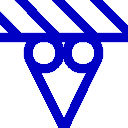

This App has three primary states. The first state is Construction. Its purpose is to construct a 2D Model to be passed to the second state, Solving. This next state's purpose is to attempt to solve the model that was made during the construction state. Results is the last state. Its purpose is to display the results calculated during the Solving state.
Each state has a root page split into two. On the left is the details pane which is used to display details about the current state. On the right is the Display. This pane is used to display graphical views of the model.
To navigate between each state there are icons located at the top of each details pane.
The navigation icons are in the top left corner. These are used to traverse between pages.
| File Menu: Displays the file management options. | ||
| Construction: Show the construction state used to make the model. | ||
| Settings: Contains the app's settings such as colours. | ||
| Report: Display the generated report. | ||
| Add: Add new sections. | ||
| Back: Return to previous page. | ||
| Sections: Manage sections used to define the members. | ||
| Solve: Solve the model. |
Ever wondered what that ENG button does on your calculator? This is used to convert a number into a specific format commonly used by engineers, hence the name Engineering Notation. This App displays model properties in two primary ways. Firstly, is the single value display.
From left to right we first have the property name (Elastic Modulus (E). Then there is the numerical value shown (200 10+E9) followed by the unit type (Pa).
The second primary display is for dual values. As each Member has two ends these are useful for reducing the amount of scrolling around.
Above are four dual displays stacked to show the common properties related to loads. From left to right we first have the Near Node, then we have an icon describing the related axis. This is followed by the Far Node and then the unit type common to both values. Near Node is a fancy term for the left end of the Member and Far Node is the right end. For the case where the Member is vertical then the Near Node is on the bottom end.
From top to bottom the four icons define firstly the X axis then the Y axis. Next is the Moment and lastly is the Linear value. These also show the positive direction of the property.
To change the values, there are three choices. To change the Near Node value click on the value. This is similar for the Far Node. If you wish to change both at the same time then click on the icon between the two.
To input data, enter the value into the text box at the bottom on the pane. If you are stuck on a tablet and can't be bothered getting the keyboard out then use the buttons to manipulate the value.
The lock icon is used to hold the value from the last input. This can help if many values have to be changed.
To construct a model it is simply a matter of double clicking (tapping) somewhere on the grid within the display to start drawing. This will create the first point (vertex, node) used to define a Member. To finish defining a Member simply click on another part of the grid somewhere. You can continue to click to create more Members of double click to finish. You can also tap and hold to finish as well if using a touch screen.
For the solvers to work the model needs to be constrained. If we were to nail a piece of timber (member) across a doorway we would model this as constrained by pins at both ends. This App contains several different types of constraints. To choose a constraint you simply click on either side of the constraints display within the details panel. From there you select the desired constraint type and the model will update.
Each constraint has a choice of either up, down, left or right. The model generally considers these to all be the same thing and the four choices are only for the display. The exceptions to this are Rollers and Tracks, both of these move in either a horizontal or vertical direction therefore top and bottom are the same as with left and right being the same to the model.
| Fixed: Fully fixed constraint. This type of constraint restricts movement in both the X and Y axes as well as restricting rotation. A signpost that is concreted into the ground would be considered fully fixed. | |||||
| Pinned: These prevent movement in both the X and Y axes but allow rotation. A seesaw in a playground is pinned in the centre where the board pivots. | |||||
|  | Roller X axis: Constrained in the Y direction. Movement along the X axis is allowed as well as rotation. | ||||
| Roller Y axis: Constrained in the X direction. Movement along the Y axis is allowed as well as rotation. | |||||
| Track X axis: Constrained in the Y direction. Movement along the X axis is allowed but rotation is restricted. | |||||
| Track Y axis: Constrained in the X direction. Movement along the Y axis is allowed but rotation is restricted. | |||||
| Free: Unconstrained. As members are straight this is usually used where member change direction or join other members at a joint without any restraints. |
The solver state requires very little attention. Hit the button and the App will solve the model automatically.
The results state uses a similar approach as the construction state although most data is read only.